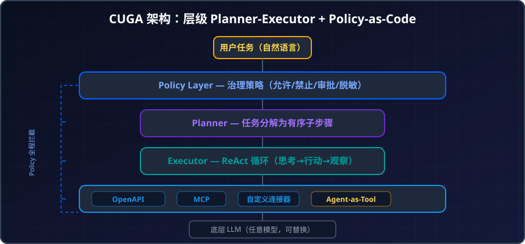

IBM CUGA 深度解读：开源企业级通用 Agent 框架的架构、治理与落地实践
序言：企业不缺聪明的 Agent，缺的是可控的 Agent
2026 年，Agent 框架多到让人选择困难——LangGraph、CrewAI、OpenAI Agents SDK、Google ADK……每个都在比谁更快、谁更灵活。
但如果你在大企业做 AI 落地，你会发现一个尴尬的现实：老板问的第一个问题不是"它能做什么"，而是"它会不会失控"。
哪些操作被允许？什么时候需要人审批？哪些数据不能暴露给模型？出了事能不能审计？
IBM Research 的回答是 CUGA（ConfigUrable Generalist Agent）——一个不追求"最快原型"或"最灵活图结构"的框架，而是把治理（Governance）烧进骨架的企业级通用智能体。
它在 AppWorld（750 个真实任务、457 个 API）拿到 #1，在 WebArena 连续保持 7 个月榜首，又在 IBM 自己的 BPO 业务中完成了生产级试点，论文被 IAAI 2026 接收。
这篇文章帮你完整拆解：CUGA 的架构设计、治理机制、工具生态、以及它跟现有框架的差异化定位。
一、CUGA 是什么：一句话定位
CUGA = 开源的企业级通用 Agent 脚手架（Harness）。
它不是一个模型，而是一套管理 Agent 行为的基础设施。它处理：
- 规划（把复杂任务分解为子步骤）
- 执行循环（一步一步调工具、检查结果、决定下一步）
- 工具调用（REST API、MCP server、自定义连接器）
- 状态管道（上下文传递、记忆管理）
- 治理策略（什么能做、什么不能做、什么需要人审）
开发者只需要配置两件事：Agent 能访问哪些工具，以及你想让它完成什么任务。剩下的，CUGA 全包了。

▲ CUGA 的定位是"Agent 脚手架"而非"Agent 模型"——它包裹在 LLM 外面，处理规划、执行、工具调用和治理，开发者专注于业务配置。
基本信息：
- GitHub：cuga-project/cuga-agent
- 安装：
pip install cuga - 许可证：开源
- 支持模型：任意 LLM（不绑定特定厂商）
- HuggingFace：IBM Research 官方 Space，含 24+ 应用示例
二、架构解析：层级 Planner-Executor
CUGA 的核心架构融合了三种经典 Agent 模式的精华：
| 模式 | 来源 | CUGA 如何使用 |
|---|---|---|
| ReAct | 思考→行动→观察循环 | Executor 层的基础执行模式 |
| CodeAct | 用代码作为行动 | 支持代码生成和执行作为工具调用 |
| Planner-Executor | 先计划后执行 | 顶层架构的核心骨架 |
分层结构
┌─────────────────────────────────────┐
│ Policy Layer │ ← 治理层：策略拦截
├─────────────────────────────────────┤
│ Planner │ ← 任务分解、子步骤生成
├─────────────────────────────────────┤
│ Executor │ ← 逐步执行 + ReAct 循环
├─────────────────────────────────────┤
│ Tool Layer (OpenAPI/MCP/Custom) │ ← 工具调用层
├─────────────────────────────────────┤
│ LLM (Any) │ ← 底层大模型（可换）
└─────────────────────────────────────┘
工作流程
- 用户下达任务（自然语言）
- Planner 分解：将复杂任务拆解为有序子步骤列表，带依赖关系
- Executor 逐步执行：每一步走 ReAct 循环——思考→选工具→调用→观察结果→决定下一步
- Policy 层全程拦截：每个工具调用前后都经过策略检查
- 状态流转：步骤间的上下文通过状态管道传递
这种层级设计的好处是关注点分离：Planner 只管"做什么"，Executor 只管"怎么做"，Policy 只管"能不能做"。三者解耦后，改任一层都不影响其他层。
三、治理先行：Governance by Construction
这是 CUGA 最独特的卖点，也是它跟所有其他框架最大的差异。
什么是 "Governance by Construction"
传统做法：先把 Agent 跑起来，出了问题再加 guardrail。 CUGA 做法：治理策略是架构的一部分，不是事后补丁。
IBM 在 ACM CAIS 2026 和 arXiv 上发表了专门论文阐述这个理念：运行时治理架构在执行的每一个关键阶段强制实施策略干预，不需要微调模型本身。
Policy-as-Code 系统
CUGA 的策略层是模块化、声明式的：
- 允许列表：Agent 能调用哪些工具/API
- 禁止列表：绝对不能触碰的操作（如删除数据、发送支付）
- 审批门控：特定操作需要人工确认后才能继续
- 信息边界：哪些数据字段可以暴露给 LLM，哪些必须脱敏
- 超时与重试：执行步骤的时间限制和失败处理策略
关键特性：不需要微调模型。策略在运行时注入，换模型不影响治理逻辑。这意味着你可以用同一套治理规则管理不同的 LLM 后端。
为什么企业需要这个
在金融、医疗、法律等合规敏感行业，Agent 每一步操作都可能涉及：
- 个人隐私数据（GDPR、个人信息保护法）
- 财务操作（SOX 合规）
- 审计追踪（谁授权了这个操作？）
没有内建治理的框架，要在上线前堆砌大量自定义中间件；CUGA 把这些变成了一等公民，开箱即用。
关于 Agent 治理的更多讨论，也可参考我们之前的 Agent 治理与可观测性的隐性成本。
四、多工具生态：OpenAPI + MCP + 自定义
CUGA 的工具层支持三种接入方式，覆盖企业常见的所有集成场景：
1. OpenAPI Spec 自动接入
给 CUGA 一份 OpenAPI 3.x 的 spec 文件，它自动解析出所有 endpoint，变成 Agent 可调用的工具。无需手写 wrapper。
适用场景：企业内部已有 REST API（CRM、ERP、ITSM 工单系统）。
2. MCP Server 接入
CUGA 原生支持 Anthropic 的 Model Context Protocol，可以直接连接任何 MCP server 作为工具源。
适用场景：需要跨平台工具复用、或已有 MCP 生态的团队。关于 MCP 协议的详细介绍见 MCP vs A2A 协议深度解读。
3. 自定义连接器
对于非标准接口（遗留系统、RPA 桥接、数据库直连），CUGA 支持开发者写自定义连接器插入工具层。
4. Agent-as-Tool：可组合性
CUGA 最精妙的设计：CUGA 自身可以作为工具暴露给其他 Agent。
这意味着你可以：
- 一个"总管 Agent"调度多个"专业 CUGA Agent"
- 实现嵌套推理：当任务超出一个 Agent 的能力范围，它可以委托给另一个
这是原生的多智能体协作能力，不需要额外的编排框架。
五、基准成绩：不只是"能跑"
IBM 对 CUGA 的基准验证非常扎实：
| 基准 | 描述 | CUGA 成绩 |
|---|---|---|
| AppWorld | 750 个真实世界任务、457 个 API | #1 |
| WebArena | 网页操作自动化基准 | #1（2025.2 - 2025.9 连续 7 个月） |
论文表述的关键发现：
- CUGA 的准确率接近定制化专用 Agent——这意味着你不需要为每个场景单独开发 Agent。
- 通过系统化的迭代评估、分析和改进方法（而非暴力堆算力），实现了快速且低成本的性能提升。
这回答了一个核心问题：通用 Agent 是否能替代专用 Agent？ IBM 的答案是：在大多数场景下，配置一个通用 Agent 的效果已经足够接近专用方案，而开发成本显著更低。
六、企业落地：BPO 生产试点
CUGA 不只活在基准榜单上。IBM 在自己的 BPO（业务流程外包） 业务中进行了生产级部署试点，相关论文被 IAAI 2026 接收。
试点场景
业务流程外包中大量存在的重复性数字工作：
- 跨多个企业应用系统操作（CRM + 工单 + 邮件 + 数据库）
- 需要遵循严格的操作规程（SOP）
- 要求可审计、可追溯
关键发现
论文报告的两大贡献：
- 早期证据：通用 Agent 可以在企业规模下实际运行，而非只是 Demo。
- 经验教训：从技术和组织两个层面提炼了落地过程中的关键挑战——包括可扩展性、可审计性、安全性和治理。
企业部署的核心挑战
| 挑战 | CUGA 的应对 |
|---|---|
| 可扩展性 | 轻量 Harness 设计，无重型依赖 |
| 可审计性 | 全链路执行日志 + Policy 拦截记录 |
| 安全性 | 信息边界 + 操作白名单 |
| 治理合规 | Policy-as-code，声明式配置 |
| 开发效率 | 通用配置替代逐场景定制 |
七、24 个应用示例：拿来就用
IBM 在 HuggingFace 上发布了完整的应用示例集，覆盖：
- Web 自动化：浏览器操作、表单填写、数据抓取
- API 编排：多 API 串联调用、条件路由
- 数据处理：文件解析、报表生成
- 企业系统集成：CRM 操作、工单处理
- 多 Agent 协作：CUGA 嵌套 CUGA
HuggingFace 博客的原话概括了 CUGA 的使用体验：
"CUGA 做了反转——它替你处理规划、执行循环、工具调用、状态管道。剩下的才是真正属于你的部分：Agent 能触达哪些工具，以及你告诉它做什么。"
这意味着：从零到一个可用的企业 Agent，核心工作量从"搭架子"变成了"写配置"。
八、与主流框架对比：定位差异
把 CUGA 放进 2026 年的框架版图中看：
| 维度 | CUGA | LangGraph | CrewAI | OpenAI Agents SDK |
|---|---|---|---|---|
| 核心哲学 | 通用 + 治理 | 图 + 确定性 | 角色 + 速度 | 低摩擦 + GPT 原生 |
| 内建治理 | ✅ Policy-as-code | ❌ 需自建 | ❌ 无 | ⚠️ 基础 guardrails |
| 原型速度 | 中（配置驱动） | 慢（图构建） | 快（20 行） | 快 |
| 生产可审计 | ✅ 全链路 | ✅（需 LangSmith） | ⚠️ 有限 | ⚠️ Dashboard |
| 工具接入 | OpenAPI + MCP + 自定义 | 自定义 + MCP | 自定义 + MCP | 原生工具 |
| 可组合性 | Agent-as-tool 原生 | 子图 | Delegation | Handoff |
| 模型绑定 | 无 | 无 | 无 | GPT 系列 |
| 适合谁 | 合规驱动的企业 | 复杂工作流团队 | 快速验证团队 | OpenAI 生态用户 |
CUGA 的独特优势
- 治理不是插件，是骨架——其他框架可以加治理，但都是"事后补丁"；CUGA 的 Policy 层与执行循环深度集成。
- 通用性经过基准验证——#1 on AppWorld 和 WebArena 不是宣传口号，是可复现的评测结果。
- IBM 自己用它做生产——论文报告了真实的 BPO 试点，不只是开源然后不管。
CUGA 的局限
- 社区生态还在早期——相比 LangGraph 和 CrewAI 的庞大社区，CUGA 的第三方教程、插件还很少。
- 原型速度不是最快的——如果你只想 45 分钟跑通一个 Demo，CrewAI 仍然更快。
- 学习曲线中等——理解 Planner-Executor + Policy 层的配置需要一些时间。
九、什么时候该选 CUGA
直接给决策建议：
选 CUGA 的信号：
- 你的行业有明确的合规要求（金融、医疗、政务、法律）
- 你需要可审计的执行链路（出事能追溯是谁授权的）
- 你的 Agent 要操作多个企业系统（CRM + ERP + 工单）
- 你希望一套通用方案覆盖多个场景，而非每个场景定制
- 你要求模型可替换（不想绑定任何一家 LLM 厂商）
不选 CUGA 的信号：
- 你只需要快速验证一个想法（→ CrewAI）
- 你的工作流有极其复杂的图结构和循环（→ LangGraph）
- 你的团队全栈 OpenAI 且不关心供应商绑定（→ Agents SDK）
- 你需要极致的社区支持和教程（→ LangGraph/CrewAI）
小结
CUGA 代表了 2026 年 Agent 框架发展的一个重要方向：从"能力竞赛"转向"信任竞赛"。
当所有框架都能让 Agent 调工具、做规划、串联多步骤时，企业真正的差异化诉求变成了：我信不信任这个 Agent 去碰我的生产系统？
CUGA 用 Policy-as-code 给出了一种架构级的回答——治理不是运维团队事后补的规则，而是从第一行代码就存在的设计约束。它不一定是所有人的最佳选择，但对于合规驱动的企业场景，它可能是 2026 年最省心的选择。
如果你对多智能体框架的全景对比感兴趣，推荐搭配阅读我们的 多智能体协作框架选型指南。
免责声明
本文为技术选型参考，所涉基准数据和产品特性以 2026 年 6 月为准。CUGA 作为开源项目仍在快速迭代，功能和 API 可能变化。文中不构成任何投资建议或技术选型的最终依据，请读者结合自身场景独立评估。
参考来源
- Introducing CUGA: The enterprise-ready configurable generalist agent - IBM Research Blog
- From Benchmarks to Business Impact: Deploying IBM Generalist Agent in Enterprise Production - IAAI 2026
- Governance by Construction for Generalist Agents - arXiv
- Towards Enterprise-Ready Computer Using Generalist Agent - arXiv
- Democratizing Configurable AI Agents - HuggingFace Blog
- CUGA Apps: Two Dozen Working Examples - HuggingFace Blog
- cuga-project/cuga-agent - GitHub
- cuga - PyPI
- IBM Research Introduces CUGA - InfoQ
相关阅读
推荐搭配装备
善其事，利其器。以下硬件能最大化你的AI体验👇
🔗 通过以上链接购买可支持本站持续运营 🙏